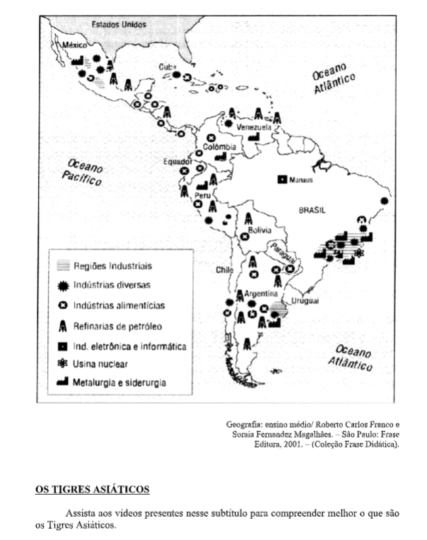
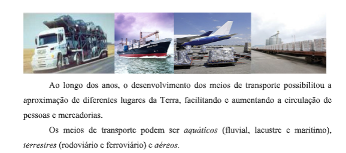

Capítulo 2: Noções Cartografia e Tempo Geológico
Questão:Como vimos no capítulo anterior, muitas sociedades utilizaram os astros como maneira de se localizar. Os avanços tecnológicos ao longo da história, partiram das bases lançadas pela astronomia na antiguidade para criar os primeiros mapas que evoluíram até o surgimento do GPS. De que maneira podemos utilizar mapas e coordenadas geográficas para nos localizarmos?
Contextualização – Construção CivilO trabalho de edificação, requer um conhecimento apurado da geolocalização. A colocação de janelas voltadas para um ponto cardeal específico pode significar que os moradores\ ocupantes do edifício terão mais ou menos luz em cada um dos horários do dia. Existem casos de construções religiosas que precisam indicar aos fiéis um determinado ponto para onde se voltar no momento das orações, o conhecimento dos pontos cardeais e a localização dos prédios no espaço é fundamental.
 1. Rosa dos VentosA rosa dos ventos ou rosa náutica é um desenho que aparece no mostrador de bússolas, em mapas, plantas, maquetes, etc. A utilização de rosas dos ventos é extremamente comum em todos os sistemas de navegação antigos e atuais. Seu desenho em forma de estrela tem a finalidade única de facilitar a visualização com o balanço da embarcação.

Norte (N) - Marca a direção do Pólo Norte geográfico da Terra. Existem dois sinônimos: setentrional e boreal. O referencial astronômico mais importante é a Estrela Polar.
Sul (S) - Marca a direção do Pólo Sul geográfico da Terra. Existem dois sinônimos: meridional e austral. O referencial astronômico mais conhecido é o Cruzeiro do Sul.
Leste (L) - O referencial aproximado é o "nascer do Sol". Como a Terra gira de oeste para leste, visualiza-se o nascente a leste. Durante o dia, tem-se a impressão de que o Sol cruza o céu de leste (onde nasce) para oeste (onde se põe), constituindo o movimento aparente do Sol. O sinônimo mais conhecido é a palavra oriente.
Oeste (O) - O referencial aproximado é o "pôr do Sol". O sinônimo mais difundido é a palavra ocidente. Os pontos cardeais não são suficientes para nos orientarmos com precisão sobre a superfície da Terra e, por essa razão, é necessário utilizarmos também os pontos colaterais e os subcolaterais, que se situam entre dois pontos cardeais.

A origem da Terra é apenas uma hipótese. Uma vez lançado do “útero cósmico, o embrião do que seria a Terra, começa o seu processo de formação”. De uma bola incandescente o planeta passou a ter crosta devido o resfriamento e esta crosta divide-se em duas partes, uma continental e outra oceânica. A crosta continental inicialmente era um bloco único e se chamava Pangéia, (toda terra). Existem duas teorias que se completam quanto a divisão dos continentes:
# Teoria da deriva dos continentes, defendida pelo geofísico alemão Alfred Wegener, em 1912. # Teoria das placas tectônicas, que comprovou e explicou melhor a teoria da deriva dos continentes. Foi desenvolvida na década de 1960 pelos geógrafos americanos Harry Hess e Robert Dietz. A deriva dos continentes
Havia um único bloco de terra ”Pangeia” e um único Oceano “Pantalassa” começaram a se fragmentar mais ou menos na era Mesozóica, formando dois continentes Laurásia ao norte e Godwana ao Sul, a partir daí as divisões foram se sucedendo até os continentes atigirem a configuração atual. Wegener não conseguiu provar todas as suas idéias. As maiores evidências eram as identidades geológicas e de vida animal e vegetal entre os continentes, principalmente entre a América do Sul e a África, América do Sul e Austrália; Europa e América do Norte e entre a África e a Índia. Os Cientistas na época não deram crédito a Wegener, achavam que suas idéias eram fantasiosas. Com a utilização de novos aparelhos foram estudando melhor o fundo do oceano e na década de 60 os americanos Harry e Robert conseguiram explicações para as questões de Wegener. Ao longo das grandes cordilheiras submarinas( dorsais oceânicos) , abren-se fendas por onde passa material magmático que, após resfriar-se, forma uma nova crosta, causando a expansão do fundo do mar.
A Teoria da Deriva dos continentes e as descobertas da expansão do fundo do mar permitiram a elaboração da teoria das placas tectônicas Segundo esta teoria a terra esta dividida em placas que flutuam sobre um substrato pastoso – a astenosfera- As maiores placas são: Americana, do Pacífico, Antártica, Indo-Australiana, Euro-Asiatica e Africana, e outras menores: a do Caribe, a de Cocos, a da Grecia, Arábica, a da Anatólia, a Iraniana e das Filipinas. O movimento dos continentes é de mais ou menos 1 cm por ano e na região de encontro das placas ocorrem os fenômenos e as modificações na crista terrestre. As regiões sujeitas a vulcanismo e terremotos estão entre os limites das placas.
VulcõesVulcão é uma formação geológica que consiste de uma fissura na crosta terrestre, sobre a qual se acumula um cone formado por material vulcânico. Sobre esse cone, está uma espécie de chaminé côncava chamada cratera. O cone forma-se pela deposição de matéria fundida e sólida, que flui ou é expelida através da chaminé a partir do interior da Terra.
A energia dos vulcões ativos resulta de processos ligados aos movimentos das placas da crosta terrestre. Além disso, os vulcões tendem a situar-se nas fronteiras das placas mais importantes. Alguns vulcões encontram-se em estado de erupção permanente, ao menos no presente geológico, como os da cadeia Cinturão/Círculo de Fogo, que rodeia o oceano Pacífico.